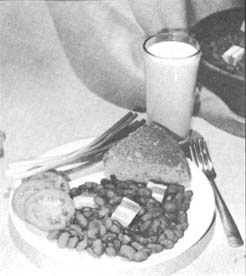

Folks on limited budgets should know that they can stretch their food pennies with a tasty, nutritious combination of pinto beans and corn. Such a diet is not the marginal bill of fare you might imagine, either. Rather, as generations of poor people throughout Mexico and the southwestern United States have proven, it can supply a fair amount of the body's daily requirements of vitamins and minerals and a goodly portion of the necessary proteins.
Neither beans nor corn alone, of course, is such a complete food . . . chiefly because neither is a complete protein. Beans, however, contain all the essential amino acids but one (methionine) . . . which just happens to be the amino acid that corn does have. Together, a mixture of two parts corn and one part beans is almost equal in protein quality to fresh milk. Add some fruits and vegetables to supply the vitamins and minerals that beans and corn lack and top with some real milk . . . and you've got a fairly well-balanced diet that is both tasty and very economical. The further addition of fresh wheat germ and an occasional egg should round this menu off a lot closer to nutritionally perfect than the "average" American diet without raising the total cost too many pennies.
Now I'm not recommending that everyone completely switch from sirloin steaks (or even hamburger) to a morning, noon and night diet of pinto beans and corn. However, when money's short or you're trying to save every extra nickle for the down-payment on that farm, it is nice to know that a regular substitution of corn and beans for a meat dish can spin the old budget out by a rather large factor.
For instance, in New Mexico-where pinto beans are dryfarmed in semi-arid fields-they may be purchased in bulk at minimal cost. Even after the beans are shipped half-way across the country, they usually sell at a super-low price of 15-20 cents per pound (less than 10 cents a day per person) that will fit almost anybody's food budget. (I bought 10 pounds of bulk mixed beans in West Virginia recently for only 10 cents a pound.-JS) Dry corn is just as inexpensive . . . making the combination much more economical than meat, milk or any other source of protein.
The following traditional recipes from the southwestern section of this country will rapidly introduce you (if you need an introduction) to both dried corn and pinto beans.
Pinto beans, or frijoles as they're called in Mexico, can be prepared in a variety of mouth-watering ways. They should always be cooked a long time at a low temperature (that's the secret of making them tasty). An earthenware pot is best for this cooking method but a metal kettle can also be used with success.
PINTO BEANS (FRIJOLES)
2 cups beans
10 cups water (approx.)
4 tablespoons bacon fat or 1 cup diced salt pork
2 garlic cloves, minced
2 teaspoons sugar
2 teaspoons paprika
1 teaspoon chili powder
salt to taste
Pick rocks, seed or bad beans from the pintos. Wash and cover with water and let the beans soak overnight. If the pintos haven't been soaked, put them over heat, bring to a boil, cover, turn off heat and let the beans sit for one hour before continuing with the cooking process. Add sugar and garlic to the pintos, place them over heat, cover and simmer.
Throw in some bacon fat or a chunk of salt pork after the beans have cooked at least a half hour and add enough boiling water during cooking to keep the pintos covered. Depending on altitude and water softness, the total cooking time will be three to six hours.
Add paprika and chili powder when the pintos are about half done and, after they've become tender, add salt and cook 15 to 20 minutes or until the seasoning has cooked into the beans and the juice has slightly thickened.
BEAN CAKES
2 cups mashed beans
1 small onion, chopped
1/2 teaspoon salt
2 tablespoons cornmeal
1 tablespoon flour
1 teaspoon chili powder
Mash beans with a fork and add cornmeal, salt, flour and chili powder. Stir well. Add the chopped onion and mix until well blended. If the mixture is too dry, thin it with bean juice or a small amount of water. Heat a skillet and grease it with bacon drippings. When the pan is hot, drop in the bean mixture by the spoonful and mash each cake flat with a spoon. Brown and serve.
REFRIED BEANS (FRIJOLES REFRITOS)
Melt about three teaspoons of bacon fat for each cup of leftover beans (the fat keeps the beans from losing their flavor). Add a little flour and some chopped onions or hot chili peppers to the pintos and spoon them into the hot grease. Grated cheese may be melted into the beans just before they're taken off the fire. Serve piping hot.
PINTO BEAN SANDWICH
Pinto bean sandwiches served with tall glasses of iced tea add zest to any lunch.
1/2 cup pinto beans, mashed with fork
1 tablespoon chopped green chili peppers
1 tablespoon chopped or grated onions
1 tablespoon diced celery or dill pickles
Add the other ingredients to the mashed beans and spread the mixture on slices of homemade bread or roll it into a tortilla. Top with lettuce or mustard greens.
PINTO BEAN SALAD
2 cups cooked pinto beans, drained
2 green chili peppers, chopped
2 cucumbers, chopped
1/2 cup grated cheese
1/2 small onion, chopped
1/2 cup diced celery
2 medium tomatoes, sliced
salt and pepper to taste
Toss with three tablespoons salad oil and serve on lettuce leaf.
The corn tortilla, piping hot from the griddle, or a skillet of bright yellow cornbread-with a platter of sliced red tomatoes, fresh green onions and a tall glass of ice cold milk served with that steaming pot of pinto beans-will round out a luscious, penny-saving meal. To make the tortilla, you'll first need some lime hominy.
LIME HOMINY (NIXTAMAL)
(Hominy from blue native or concho corn is considered best for tortillas, but other varieties can be used successfully.)
2 quarts corn
4 heaping tablespoons powdered lime (purchased from the hardware store)
4 quarts water
Dissolve the lime in water and then add the corn. Stir well and put the mixture in a granite or enameled pan (do not use a metal container). Place the water-lime-corn mixture over low heat and cook until the hulls loosen from the kernels. Remove from heat, drain off the liquid and wash the corn several times in cold water until all the lime is removed and the water is clear.
LIME HOMINY TORTILLAS (TORTILLAS DE NIXTAMAL)
With lime hominy in hand, you're ready to make tortilla dough, or masa.
Run the hominy through the medium knife of a food chopper several times. If it's too dry, add a bit of water so the masa will hold together. Shape the dough into balls the size of a hen egg, place one end of a damp kitchen towel on a flat, hard surface, put a ball of masa on it and cover the dough with the other end of the towel. Flatten the tortilla with a small board or rolling pin until it's about 1/8inch thick. Or-if you prefer-work the ball into a large, thin pancake with your hands. Lightly grease a griddle and cook the tortilla on both sides.
OLD FASHIONED CORNBREAD
2 cups yellow cornmeal
1 cup flour
3 tablespoons bacon drippings
2 eggs
2 tablespoons sugar
1 1/2 teaspoons salt
1 1/2 cups milk
3 teaspoons baking powder
Measure cornmeal, flour, sugar, baking powder and salt into a bowl and stir. Add milk, mix well, add eggs and beat thoroughly. Stir in the bacon drippings and beat again until well blended. Melt two tablespoons of fat in a heated cast iron skillet, pour the batter into the hot pan and place it in a 400° F. oven. Cook about 40 minutes, or until the cornbread is lightly browned on top. If thinner, crustier bread is desired, divide the batter into two skillets and bake it about 25 minutes.
1 cup yellow cornmeal,
1/2 cup flour
2 teaspoons baking powder
2 cups milk
2 eggs
1 can green chili peppers, chopped
1 cup grated cheese
4-5 tablespoons melted butter or bacon drippings
1/2 t easpoon garlic powder (optional)
Mix the dry ingredients together, add milk and beat well Add butter or fat, stir, drop in eggs and beat vigorously until well blended. Stir in grated cheese, pour the batter into hot, greased skillet and place the pan in a 325° F oven. Bake 50 minutes and serve hot.
DRIED BEANS AND CORN
Both beans and corn can be dried and kept for long periods and Kept of time with very little loss of flavor or nutritional value. Dry ing is a handy method of preserving the foods because the process reduces 100 pounds of either to only about 10 pounds
THE DRYER
You can quite quite easily and inexpensively construct a drying tray or trays to use over your stove or range. Make the trays whatever size you find handiest by nailing together rectangular frames of 1/2 X 2-inch wooden strips and tacking small mesh wire screening across the frames' bottoms. The tray may be suspended from the ceiling and used while cooking or-if this is inconvenient-hung from a framework crane that may be swung out of the way when not in use.
One important point: when drying any kind of food ova an oil stove, a tin or galvanized sheet should be placed below the bottom tray to prevent oil fumes from reaching and penetrating the edibles.
DRYING BEANS
After the beans have matured and dried on the vine they should be shelled, placed on the drying racks and heated to 165-180° F. for 10 to 15 minutes. This will destroy any insect eggs in the beans. If you don't want to build trays, spread the beans on a flat baking pan and put them in the oven. The beans are dry enough when they no longer stick together after you squeeze a few in your hand, or when a single bean can be pressed without moisture coming to the surface. Remove the beans from heat and let them cool.
DRYING CORN
Dried sweet corn can be used in many delightful and economical soups, breads, casseroles and stews. Select freshly gathered ears in the milk stage, ready for table use. Blanch the corn by wrapping the ears in a piece of cheesecloth or placing them in a wire basket or similar porous container, and plunging them into boiling water for 8-12 minutes to set the milk. Blanching gives the corn a thorough cleaning, removes objectionable flavors and odors, kills bacteria and softens and loosens the fiber to allow quicker and more uniform evaporation of moisture during drying. Do not blanch longer than the prescribed time or color will be lost, the starch will partially cook to a paste and-worst of all-some of the valuable nutrients will dissolve out.
After blanching, drain the corn well and slice off the rows of kernels with a sharp knife. Spread the corn one layer deep on a drying rack or put it in a pan in a 130° F. oven. Gradually raise the temperature to 140° F. while stirring frequently. When the corn is hard and semi-transparent remove it from the trays and let it cool.
STORAGE CONTAINERS
When the dry beans and corn have cooled, place them in milk cartons (the wax coating makes these cartons great for storage) or some other light and insect-proof boxes, bags or cans. The containers should not be completely air-tight since the corn and beans must be allowed to "breathe" as they continue to dry in the cans.
CONDITIONING
Both beans and corn should be conditioned daily for the first 10-14 days after drying. Keep the containers open and covered only with clean, dry cloth during this time, and stir the dried products or pour them from container to container regularly. When no change in moisture content has been observed for several days, the food is ready for permanent storage.
STORAGE
After conditioning, the dried corn and beans may be sealed in the containers and stored for long periods of time if kept warm, dry, well-ventilated and protected from insects and rodents. Check the boxes, cans and/or bags from time to time and-if any dampness is found-remove the contents, dry them in a warm oven and return the corn and beans to the containers.
REVITALIZING DRIED BEANS AND CORN
Approximately three to five cups of water must be added to a recipe for every cup of dried corn or beans. Before using the dried corn, cover it with water and soak the kernels until they are swollen. Add enough water to cover the swelled kernels (if necessary), put in a bit of honey or sugar and bring the corn to a boil. Then turn the heat down and cook the corn slowly until it's almost tender. Salt, pepper and butter to taste and finish cooking.
Dried corn may also be run through a food chopper and added to soups at the same time that onions and carrots are dropped into the boiling water.
FAR LEFT: Lime hominy tortillas. LEFT ABOVE: Old Fashioned cornbread. LEFT BELOW: bean cakes. BELOW: chili-cheese cornbread. RIGHT: Pinto beans, cornbread, tomatoes, onions and milk.
|
 Pinto beans, cornbread, tomatoes, onions and milk. |
|
|